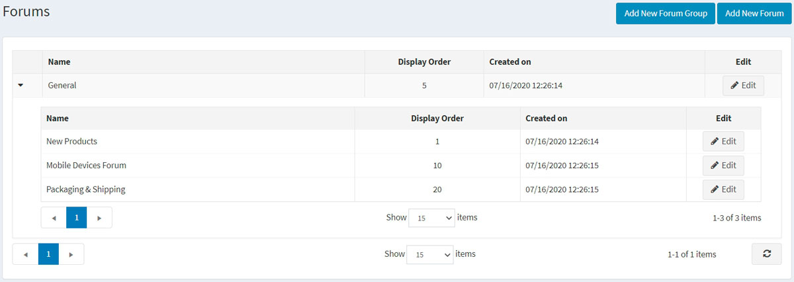
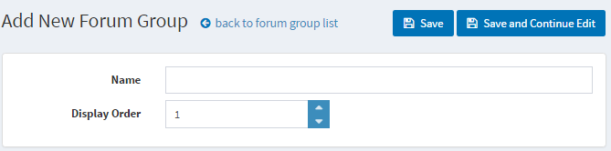
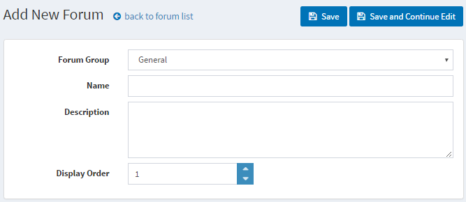
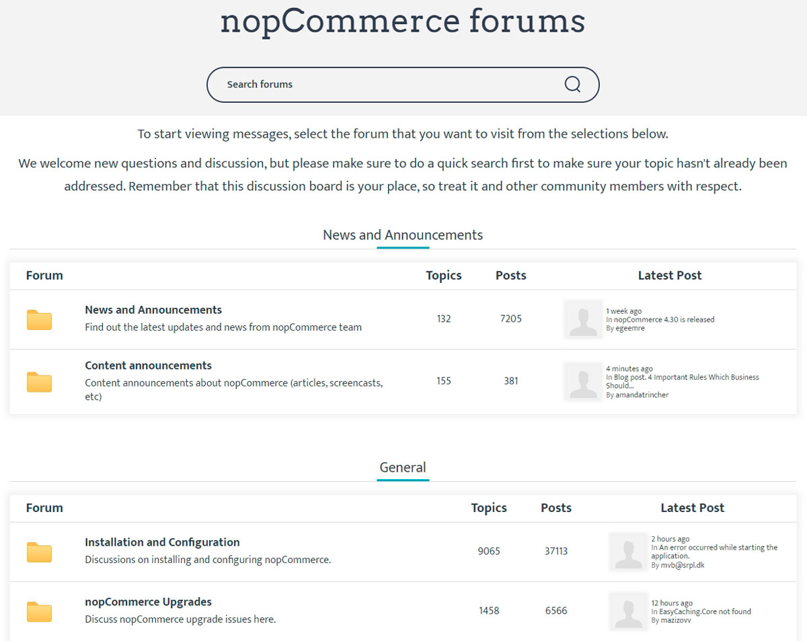
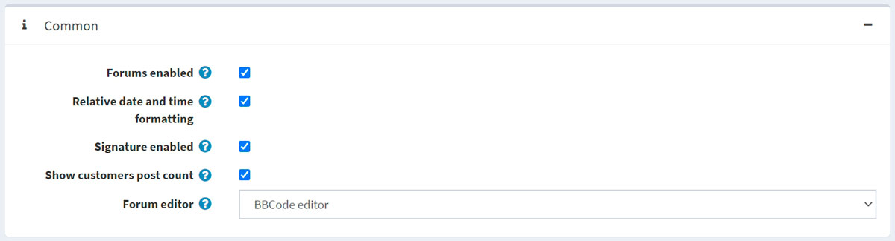
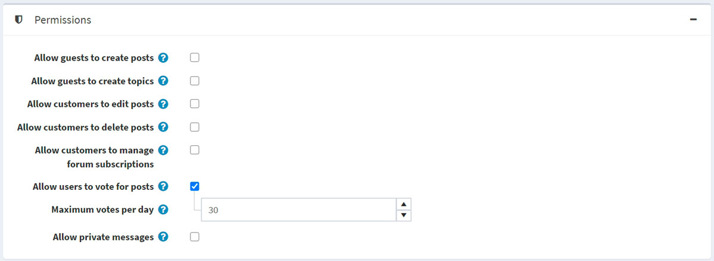
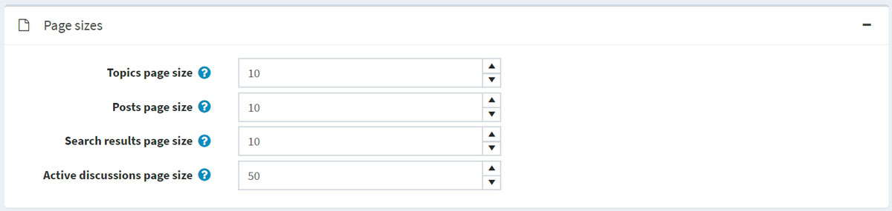
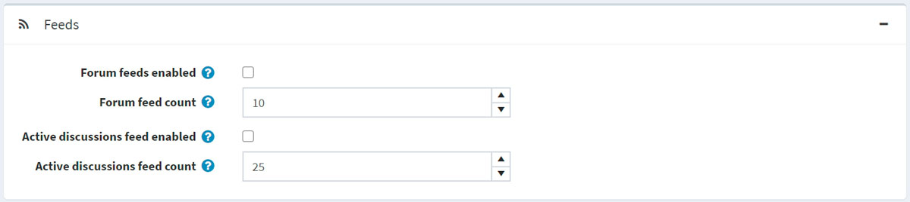

論壇
論壇是一個線上討論網站，人們可以在這裡以張貼訊息的形式進行對話。一個論壇可能包含多個子論壇，每個子論壇中又包含數個內容頁面（Topic）。
Note
在 nopCommerce 中，論壇預設為停用。若要啟用論壇，請前往 設定 → 設定 → 論壇設定 並勾選 啟用論壇 (Forums enabled) 核取方塊。「論壇」連結應會顯示在公開商店的選單中（在預設佈景主題中，位於頂部選單或頁尾）。
若要管理論壇群組和論壇（位於論壇群組內），請前往 內容管理 → 論壇。

新增論壇群組
點擊 新增論壇群組 (Add new forum group) 按鈕。

- 定義新的論壇群組 名稱 (Name)。
- 在 顯示順序 (Display order) 欄位中，輸入論壇群組的顯示順序。數值 1 代表列表的最上方。
點擊 儲存 (Save)。
新增論壇

- 從 論壇群組 (Forum group) 下拉式清單中，選取所需的論壇群組。
- 輸入新論壇的 名稱 (Name)。
- 輸入新論壇的 說明 (Description)。
- 選取論壇群組的 顯示順序 (Display order)。數值 1 代表列表的最上方。
點擊 儲存 (Save)。
若要查看論壇運作方式的範例，請前往 http://www.nopcommerce.com/boards/。

論壇設定
若要存取論壇設定，請前往 設定 → 設定 → 論壇設定。此頁面提供兩種模式：進階 (advanced) 和 基本 (basic)。
此頁面支援多商店設定；這意味著可以為所有商店定義相同的設定，或針對不同商店設定不同的值。如果您想管理特定商店的設定，請從多商店設定下拉式清單中選擇該商店名稱，並勾選左側所需的核取方塊以設定其自訂值。詳細資訊請參考 多商店 (Multi-store)。
一般 (Common)

在 一般 (Common) 面板中定義以下論壇設定：
- 勾選 啟用論壇 (Forums enabled) 核取方塊以啟用論壇。
- 勾選 相對日期與時間格式 (Relative date and time formatting) 核取方塊以啟用相對日期與時間顯示（例如：2 小時前、1 天前）。
- 您可以勾選 啟用簽名 (Signature enabled)，讓顧客能夠設定自己的簽名。
- 勾選 顯示顧客發文數量 (Show customers post count) 核取方塊，以啟用顯示顧客所建立的貼文數量。
- 從 論壇編輯器 (Forum editor) 下拉式清單中，選取要使用的論壇編輯器類型：
- 簡易文字框 (Simple textbox)。
- BBCode 編輯器 (BBCode editor)。
Note
不建議在正式營運環境中變更論壇編輯器類型。
權限 (Permissions)

在 權限 (Permissions) 面板中定義以下論壇設定：
- 允許訪客建立貼文 (Allow guests to create posts)。
- 允許訪客建立內容頁面 (Allow guests to create topics)。
- 允許顧客編輯貼文 (Allow customers to edit posts)。
- 允許顧客刪除貼文 (Allow customers to delete posts)。
- 允許顧客管理論壇訂閱 (Allow customers to manage forum subscriptions)。
- 勾選 允許使用者對貼文投票 (Allow users to vote for posts) 核取方塊以啟用投票功能。
- 每日最高票數 (Maximum votes per day) 欄位用於設定在啟用上述設定的情況下，使用者每日可投出的票數。
- 勾選 允許私人訊息 (Allow private messages) 核取方塊以啟用私人訊息功能。若已啟用，下列兩項設定將會顯示：
- 勾選 顯示私人訊息提醒 (Show alert for PM) 核取方塊，以在收到新私人訊息時啟用提醒彈出視窗。
- 若希望顧客在收到新私人訊息時透過電子郵件收到通知，請勾選 通知私人訊息 (Notify about private messages)。
頁面大小 (Page sizes)

在 頁面大小 (Page sizes) 面板中定義以下論壇設定：
- 內容頁面大小 (Topics page size) — 論壇中內容頁面的分頁大小，例如：每頁顯示 '10' 個內容頁面。
- 貼文頁面大小 (Posts page size) — 內容頁面中貼文的分頁大小，例如：每頁顯示 '10' 篇貼文。
- 搜尋結果頁面大小 (Search results page size) — 搜尋結果的分頁大小，例如：每頁顯示 '10' 個結果。
- 活躍討論頁面大小 (Active discussions page size) — 活躍討論頁面的分頁大小，例如：每頁顯示 '10' 個結果。
資訊來源 (Feeds)

在 資訊來源 (Feeds) 面板中定義以下論壇設定：
- 勾選 啟用論壇 RSS (Forum feeds enabled) 核取方塊以啟用每個論壇的 RSS 資訊來源。
- 在 論壇資訊來源數量 (Forum feed count) 欄位中，設定每個資訊來源應包含的內容頁面數量。
- 勾選 啟用活躍討論 RSS (Active discussions feed enabled) 核取方塊以啟用活躍討論內容頁面的 RSS 資訊來源。
- 在 活躍討論資訊來源數量 (Active discussions feed count) 欄位中，設定「活躍討論」資訊來源應包含的討論數量。